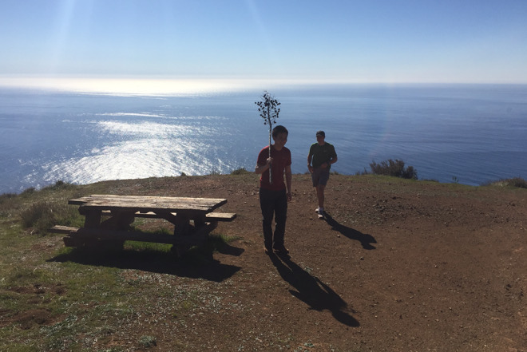
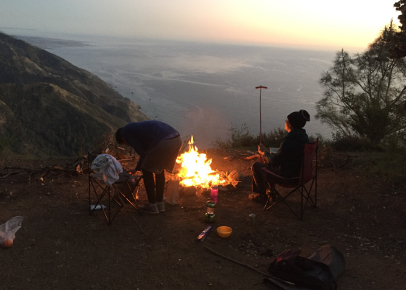
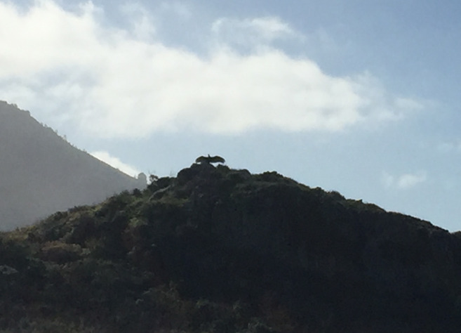
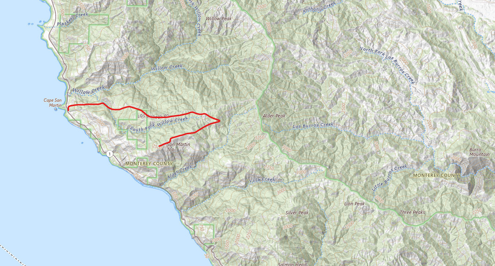

Location: San Martin Top, Big Sur Type of trip: Car Camping Date: Feb. 17-18, 2018 People: Grey Liedtke, Tony
It was junior year of college and my good friend Grey and I were spending long days and nights in the engineering labs.
We were worn out, staring through white boards like they were car windows with views miles into the ocean.
The ridgelines were calling.
So on a nice sunny February weekend, we packed up Grey’s Ford Escape and convinced our friend Tony to tag along for a quick trip to the Big Sur coast.
We drove up to San Martin Top, a backroad riding the spine of an incredible ocean facing ridgeline.
It did not disappoint and we were greeted by a beautiful campsite at the end of the road.
We hiked around, enjoyed the sunset and roasted some hot dogs.
A couple pulled up on us with a much bigger vehicle and were excited to hear we were only staying for the night.
They took our spot in the morning while we headed out towards Pacific Valley Bluff.
As we hiked the bluff a large vulture looking bird flew in on top of a small hill and opened its wings which were absurdly long.
Tony exclaimed it was a condor. Grey and I did not understand the rarity of the situation but were happy to see the show the bird was putting on.
This was my first ever condor sighting and only second to date.

Grey, Tony, and a nicely placed picnic table

Tony attempting the cinematic but less popular horizontal hotdog roast

California Condor looking like a dinosaur

USGS map (Date posted: 2025-11-10)